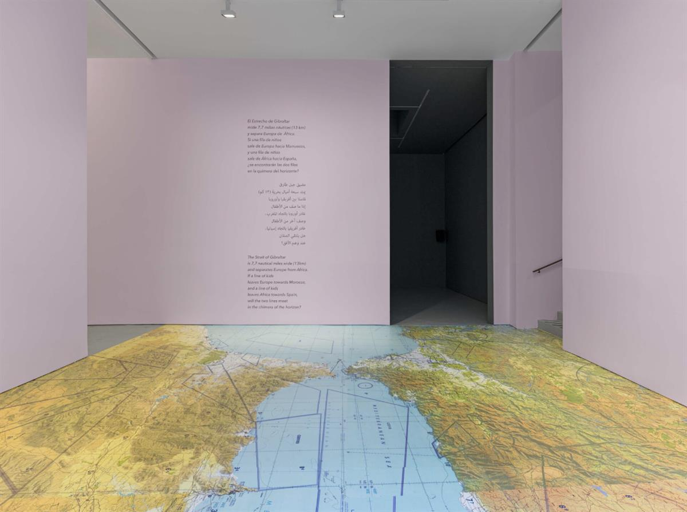
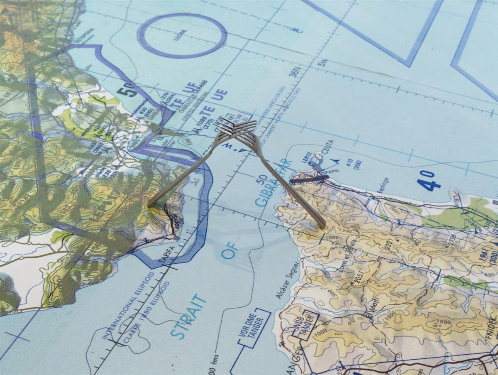
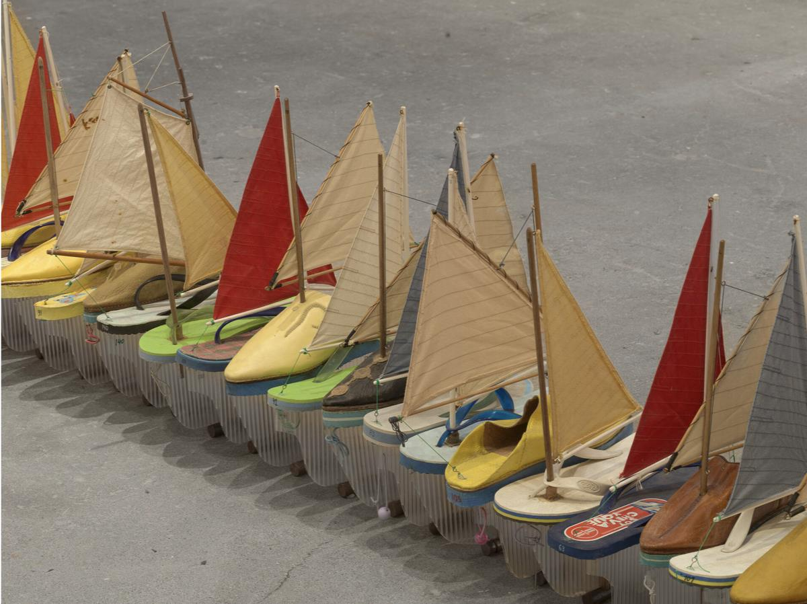
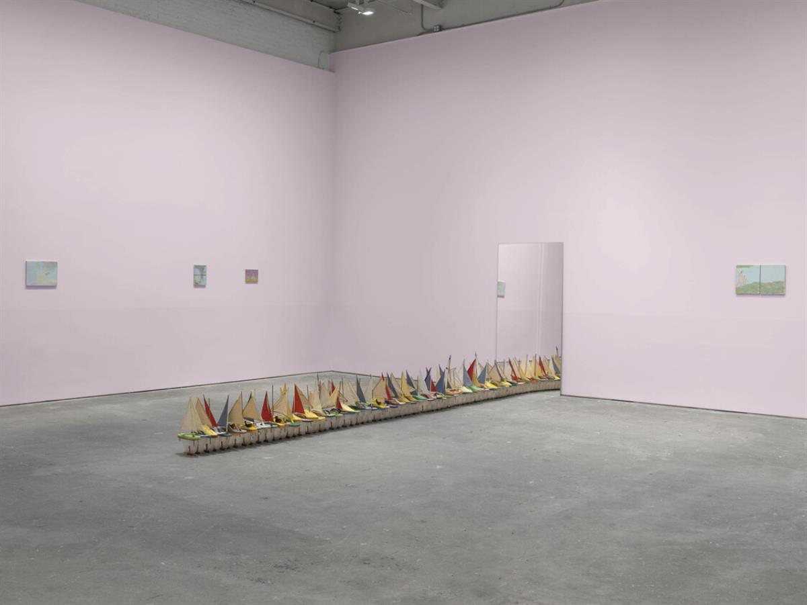
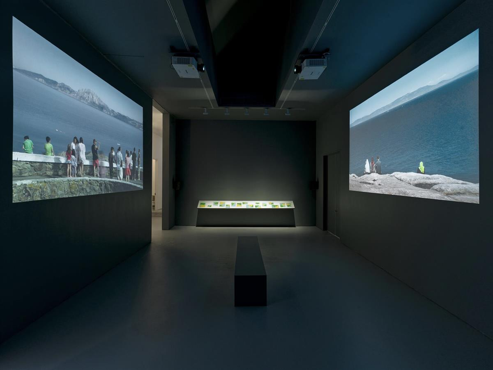

Francis Alÿs, Don’t Cross the Bridge Before You Get to the River, 2008. Made in collaboration with Rafael Ortega, Julien Devaux, Felix Blume, Ivan Boccara, Abbas Benheim, Fundación Montenmedio Arte, and children from Tangier and Tarifa in the Strait of Gibraltar, Morocco-Spain. Still from video (color, sound), 7:00 minutes. © Francis Alÿs. Courtesy the artist and David Zwirner, New York.
ON SOURCE: E-FLUX DAVID ZWIRNER
Francis Alÿs’s “The Gibraltar Projects”
Alan Gilbert
Alÿs built his project around the Strait of Gibraltar, which is one of the most visible hinges between the Global North and Global South. In ongoing, so-called “postcolonial” forms of resource extraction, multinational corporations and debt service payments, alongside internal state corruption and dysfunction, funnel wealth out of African countries, thereby helping to propel the tide pushing workers and families toward Europe and the United States.

Francis Alÿs, Map of the Strait (Gibraltar), 2024. Wheatpaste map and two stainless steel forks; maps: dimensions variable; forks: 20 x 3.2 x 1.3 cm each.
Image courtesy of David Zwirner, New York.

Francis Alÿs, Map of the Strait (Gibraltar) (detail), 2024. Wheatpaste map and two stainless steel forks; maps: dimensions variable; forks: 20 x 3.2 x 1.3 cm each.
Image courtesy of David Zwirner, New York.

Francis Alÿs, 64 Shoe Boats, 2007–08. Glass, plastic, fabric, wood, leather, foam, thread, and steel, 28 x 54 x 10 cm each. Image courtesy of David Zwirner, New York.

View of Francis Alÿs’s “The Gibraltar Projects” at David Zwirner, New York, 2024.

View of Francis Alÿs’s “The Gibraltar Projects” at David Zwirner, New York, 2024. (Back) Untitled, 2007–20. Oil, graphite, tape, and staples on tracing paper, dimensions variable. (Left and Right) Miradores, 2008. Made in collaboration with Rafael Ortega, Julien Devaux, Felix Blume, and Ivan Boccara in the Strait of Gibraltar, Morocco-Spain. Two-channel video (color, sound), 20:26 minutes, dimensions variable. Image courtesy of David Zwirner, New York.
December 13, 2024
David Zwirner
November 7–December 18, 2024
Voters in Western countries have consistently repudiated neoliberalism for more than a decade. They have done so in tandem with a rise in anti-immigration politics: reactionary populism that wants locked gates on national borders and larger regions, such as the Mediterranean and Central America, while simultaneously despising cultural gatekeepers. “The Gibraltar Projects” is a new restaging of material made in 2007 and 2008 devoted to the Strait of Gibraltar, and it is possible to imagine that the decision to exhibit the work in tandem with the recent US presidential election—in which both candidates focused heavily on immigration—might be seen as a form of critical and/or political commentary, depending on how one defines those terms. A globetrotting artist, Francis Alÿs came of age in the 1990s when, in the wake of the Cold War, the high end of the art world aspired to an ethical yet pleasurable cosmopolitanism mirrored by a new movement of people and goods accompanying the rapid spread—and imposition—of free market economics.
Over the decades, Alÿs’s art has increasingly focused on children. And while some of this work is situated in refugee camps and war zones (for Documenta 13 Alÿs repeatedly visited Afghanistan, over four years), one begins to wonder if he sees children as at least partly outside of ideology. The dozens of videos he has collaboratively made of kids playing begin to resemble a twenty-first-century version of the global-humanist “Family of Man” (1955). Yet the central work of Alÿs’s Strait of Gibraltar series resulted from his frustration dealing with adults and their battling bureaucracies. Both its video (Don’t Cross the Bridge Before You Get to the River, 2008) and sculptural (64 Shoe Boats, 2007–08) iterations involve two groups of children and teens walking into the Mediterranean Sea in lines starting on opposite sides of the strait in Tarifa, Spain, and Tangier, Morocco. They hold aloft small boats made from shoes and sandals, and they don’t make it very far into the water before being buffeted by the waves. It’s a stark reminder of just how dangerous the Mediterranean boat crossing is for Middle Eastern and African refugees and immigrants, thousands of whom have recently died trying.
While Western geopolitics—and, consequently, art—tend to get framed in relations between East and West, Alÿs built his project around the Strait of Gibraltar, which is one of the most visible hinges between the Global North and Global South. In ongoing, so-called “postcolonial” forms of resource extraction, multinational corporations and debt service payments, alongside internal state corruption and dysfunction, funnel wealth out of African countries, thereby helping to propel the tide pushing workers and families toward Europe and the United States.
Gallery-goers can quite literally step across the strait (many small paintings on display fantasize other ways of crossing) by walking on Map of the Strait (Gibraltar) (2024), a room-sized map of the Mediterranean region wheatpasted to the floor. As part of the installation, Alÿs has precariously positioned two forks touching tines across the Strait of Gibraltar, gesturing at the fundamentally material-subsistence issues at the heart of immigration, but also the universalist idea of sharing a meal, even if there are no circumstances in which the exploitative economic relationship between Global North and South is symmetrical or equal. Again, as with his focus on children, ideology is simultaneously presented and stripped away. Yet the map is also covered in infrastructural coordinates that make it appear far from a natural or idyllic landscape.
Although it might be tempting to romanticize children as freer or more creative than adults, what both Alÿs and the kids in his work ultimately do is make the literal metaphoric via play. “The Gibraltar Projects” approaches geography, national borders, and human subjects from a variety of perspectives and mediums, but only very loosely could it be called documentary. While including video, sculpture, collage, painting, and a long vitrine containing printed materials, the exhibition might be understood less as a series of proposals than a collection of drawings and sketches. The children on opposite shores, wading toward Europe and Africa, try to maintain an unbroken line amid turbulent surf. The emphasis is on imagination and dreams creating a reality different from the brutal one that neoliberalism is finding it harder and harder to disguise, against the rising tide of right-wing populism.
Category
Migration & Immigration, War & Conflict, Borders & Frontiers
Alan Gilbert is a poet and writer whose most recent book of poems is The Everyday Life of Design.
© 2024 e-flux and the author
ON SOURCE: E-FLUX DAVID ZWIRNER